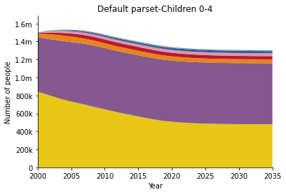
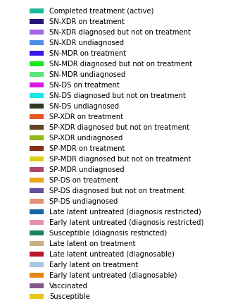
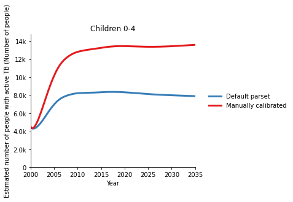
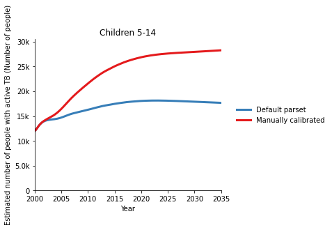
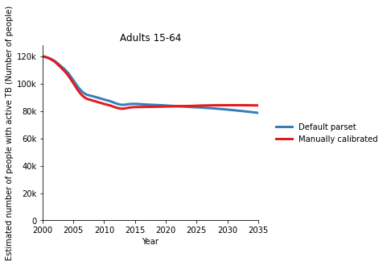
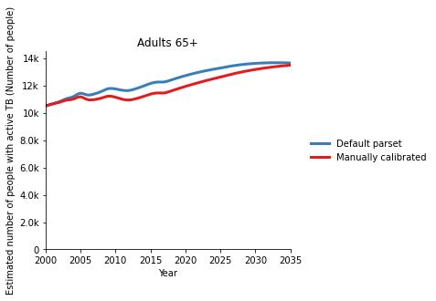
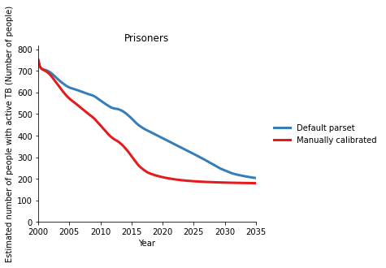
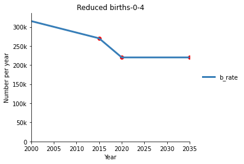
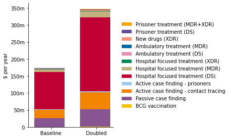
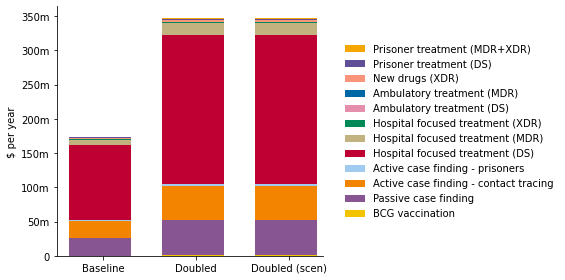

Basic workflow¶
This page demonstrates how to perform basic operations in Atomica. First, we will set up the notebook environment - the commands below are typically not required in user scripts:
[1]:
%load_ext autoreload
%autoreload 2
%matplotlib inline
import sys
sys.path.append('..')
To start with, import Atomica itself. It is often also useful to import numpy and matplotlib
[2]:
import atomica as at
import numpy as np
import matplotlib.pyplot as plt
Atomica 1.17.0 (2019-08-01) -- (c) the Atomica development team
git branch: Git branch N/A (Git hash)
2020-01-07 06:28:23.391030
Starting an application¶
The first step in starting a new application is to write a Framework file. This can be done by copying one of the templates in the atomica/library folder (either framework_template.xlsx or framework_template_advanced.xlsx) and implementing your model. Further guidance on this is provided separately in the framework documentation.
After writing the Framework, the next step is to generate a databook. This is performed in three steps
Load the framework into a
ProjectFrameworkPython instanceUse the framework to make a new
ProjectDatainstanceSave the
ProjectDatainstance to a spreadsheet
In this example, we will load an existing framework from the library. You can use at.LIBRARY_PATH to refer to the folder containing the library Excel files shipped with Atomica:
[3]:
F = at.ProjectFramework(at.LIBRARY_PATH + 'tb_framework.xlsx') # Load the Framework
D = at.ProjectData.new(F,pops=2, tvec=np.arange(2000,2018), transfers=0)
D.save('new_databook.xlsx')
Parameter "lu_prog" is in probability units and a maximum value of "1" has been entered. Probabilities in the framework should generally not be limited to "1" because it is only the timestep-specific probability that is capped at 1
Parameter "lx_prog" is in probability units and a maximum value of "1" has been entered. Probabilities in the framework should generally not be limited to "1" because it is only the timestep-specific probability that is capped at 1
Parameter "leu_act" is in probability units and a maximum value of "1" has been entered. Probabilities in the framework should generally not be limited to "1" because it is only the timestep-specific probability that is capped at 1
Parameter "lex_act" is in probability units and a maximum value of "1" has been entered. Probabilities in the framework should generally not be limited to "1" because it is only the timestep-specific probability that is capped at 1
Parameter "llu_act" is in probability units and a maximum value of "1" has been entered. Probabilities in the framework should generally not be limited to "1" because it is only the timestep-specific probability that is capped at 1
Parameter "llx_act" is in probability units and a maximum value of "1" has been entered. Probabilities in the framework should generally not be limited to "1" because it is only the timestep-specific probability that is capped at 1
Parameter "l_inf" is in probability units and a maximum value of "1" has been entered. Probabilities in the framework should generally not be limited to "1" because it is only the timestep-specific probability that is capped at 1
Parameter "v_inf" is in probability units and a maximum value of "1" has been entered. Probabilities in the framework should generally not be limited to "1" because it is only the timestep-specific probability that is capped at 1
Parameter "lr_inf" is in probability units and a maximum value of "1" has been entered. Probabilities in the framework should generally not be limited to "1" because it is only the timestep-specific probability that is capped at 1
Parameter "ar_act" is in probability units and a maximum value of "1" has been entered. Probabilities in the framework should generally not be limited to "1" because it is only the timestep-specific probability that is capped at 1
Parameter "ar_rec" is in probability units and a maximum value of "1" has been entered. Probabilities in the framework should generally not be limited to "1" because it is only the timestep-specific probability that is capped at 1
Parameter "pd_rec" is in probability units and a maximum value of "1" has been entered. Probabilities in the framework should generally not be limited to "1" because it is only the timestep-specific probability that is capped at 1
Parameter "pm_rec" is in probability units and a maximum value of "1" has been entered. Probabilities in the framework should generally not be limited to "1" because it is only the timestep-specific probability that is capped at 1
Parameter "px_rec" is in probability units and a maximum value of "1" has been entered. Probabilities in the framework should generally not be limited to "1" because it is only the timestep-specific probability that is capped at 1
Parameter "nd_rec" is in probability units and a maximum value of "1" has been entered. Probabilities in the framework should generally not be limited to "1" because it is only the timestep-specific probability that is capped at 1
Parameter "nm_rec" is in probability units and a maximum value of "1" has been entered. Probabilities in the framework should generally not be limited to "1" because it is only the timestep-specific probability that is capped at 1
Parameter "nx_rec" is in probability units and a maximum value of "1" has been entered. Probabilities in the framework should generally not be limited to "1" because it is only the timestep-specific probability that is capped at 1
Parameter "pd_term" is in probability units and a maximum value of "1" has been entered. Probabilities in the framework should generally not be limited to "1" because it is only the timestep-specific probability that is capped at 1
Parameter "pm_term" is in probability units and a maximum value of "1" has been entered. Probabilities in the framework should generally not be limited to "1" because it is only the timestep-specific probability that is capped at 1
Parameter "px_term" is in probability units and a maximum value of "1" has been entered. Probabilities in the framework should generally not be limited to "1" because it is only the timestep-specific probability that is capped at 1
Parameter "nd_term" is in probability units and a maximum value of "1" has been entered. Probabilities in the framework should generally not be limited to "1" because it is only the timestep-specific probability that is capped at 1
Parameter "nm_term" is in probability units and a maximum value of "1" has been entered. Probabilities in the framework should generally not be limited to "1" because it is only the timestep-specific probability that is capped at 1
Parameter "nx_term" is in probability units and a maximum value of "1" has been entered. Probabilities in the framework should generally not be limited to "1" because it is only the timestep-specific probability that is capped at 1
Initialization characteristics are underdetermined - this may be intentional, but check the initial compartment sizes carefully
Spreadsheet saved to /home/vsts/work/1/s/docs/examples/new_databook.xlsx.
The ProjectData class in Python can be thought of as an equivalent representation of the databook - you can edit the databook in Excel, which will result in changes to the ProjectData variable when the spreadsheet is loaded, and you can modify the ProjectData in Python and then write a modified spreadsheet. ProjectData has a number of methods that you can use to modify the databook, to do things like
Add or remove populations
Change the time span of the databook
To perform these operations, you can load in a databook using ProjectData.from_spreadsheet(). This lets you load in a databook given a particular framework. It is not required that the databook be completed prior to loading - you only need to complete the databook in its entirity if you want to use the databook in a project. So for example, to add an additional population and a transfer to this newly created databook, we could use:
[4]:
D = at.ProjectData.from_spreadsheet('new_databook.xlsx', framework=F)
D.add_pop('pris','Prisoners')
D.add_transfer('aging','Aging')
D.save('new_databook_2.xlsx')
Spreadsheet saved to /home/vsts/work/1/s/docs/examples/new_databook_2.xlsx.
Creating a project¶
Once you have completed the framework file and databook, you can create a project that can be used to run simulations and analyses. To do this, simply create a Project instance, passing in the file names for the framework and databook. Here we will use a pre-filled databook from the library:
[5]:
P = at.Project(framework=at.LIBRARY_PATH + 'tb_framework.xlsx', databook=at.LIBRARY_PATH + 'tb_databook.xlsx')
Parameter "lu_prog" is in probability units and a maximum value of "1" has been entered. Probabilities in the framework should generally not be limited to "1" because it is only the timestep-specific probability that is capped at 1
Parameter "lx_prog" is in probability units and a maximum value of "1" has been entered. Probabilities in the framework should generally not be limited to "1" because it is only the timestep-specific probability that is capped at 1
Parameter "leu_act" is in probability units and a maximum value of "1" has been entered. Probabilities in the framework should generally not be limited to "1" because it is only the timestep-specific probability that is capped at 1
Parameter "lex_act" is in probability units and a maximum value of "1" has been entered. Probabilities in the framework should generally not be limited to "1" because it is only the timestep-specific probability that is capped at 1
Parameter "llu_act" is in probability units and a maximum value of "1" has been entered. Probabilities in the framework should generally not be limited to "1" because it is only the timestep-specific probability that is capped at 1
Parameter "llx_act" is in probability units and a maximum value of "1" has been entered. Probabilities in the framework should generally not be limited to "1" because it is only the timestep-specific probability that is capped at 1
Parameter "l_inf" is in probability units and a maximum value of "1" has been entered. Probabilities in the framework should generally not be limited to "1" because it is only the timestep-specific probability that is capped at 1
Parameter "v_inf" is in probability units and a maximum value of "1" has been entered. Probabilities in the framework should generally not be limited to "1" because it is only the timestep-specific probability that is capped at 1
Parameter "lr_inf" is in probability units and a maximum value of "1" has been entered. Probabilities in the framework should generally not be limited to "1" because it is only the timestep-specific probability that is capped at 1
Parameter "ar_act" is in probability units and a maximum value of "1" has been entered. Probabilities in the framework should generally not be limited to "1" because it is only the timestep-specific probability that is capped at 1
Parameter "ar_rec" is in probability units and a maximum value of "1" has been entered. Probabilities in the framework should generally not be limited to "1" because it is only the timestep-specific probability that is capped at 1
Parameter "pd_rec" is in probability units and a maximum value of "1" has been entered. Probabilities in the framework should generally not be limited to "1" because it is only the timestep-specific probability that is capped at 1
Parameter "pm_rec" is in probability units and a maximum value of "1" has been entered. Probabilities in the framework should generally not be limited to "1" because it is only the timestep-specific probability that is capped at 1
Parameter "px_rec" is in probability units and a maximum value of "1" has been entered. Probabilities in the framework should generally not be limited to "1" because it is only the timestep-specific probability that is capped at 1
Parameter "nd_rec" is in probability units and a maximum value of "1" has been entered. Probabilities in the framework should generally not be limited to "1" because it is only the timestep-specific probability that is capped at 1
Parameter "nm_rec" is in probability units and a maximum value of "1" has been entered. Probabilities in the framework should generally not be limited to "1" because it is only the timestep-specific probability that is capped at 1
Parameter "nx_rec" is in probability units and a maximum value of "1" has been entered. Probabilities in the framework should generally not be limited to "1" because it is only the timestep-specific probability that is capped at 1
Parameter "pd_term" is in probability units and a maximum value of "1" has been entered. Probabilities in the framework should generally not be limited to "1" because it is only the timestep-specific probability that is capped at 1
Parameter "pm_term" is in probability units and a maximum value of "1" has been entered. Probabilities in the framework should generally not be limited to "1" because it is only the timestep-specific probability that is capped at 1
Parameter "px_term" is in probability units and a maximum value of "1" has been entered. Probabilities in the framework should generally not be limited to "1" because it is only the timestep-specific probability that is capped at 1
Parameter "nd_term" is in probability units and a maximum value of "1" has been entered. Probabilities in the framework should generally not be limited to "1" because it is only the timestep-specific probability that is capped at 1
Parameter "nm_term" is in probability units and a maximum value of "1" has been entered. Probabilities in the framework should generally not be limited to "1" because it is only the timestep-specific probability that is capped at 1
Parameter "nx_term" is in probability units and a maximum value of "1" has been entered. Probabilities in the framework should generally not be limited to "1" because it is only the timestep-specific probability that is capped at 1
Initialization characteristics are underdetermined - this may be intentional, but check the initial compartment sizes carefully
Elapsed time for running "default": 0.939s
When you create a project, a default simulation is automatically run. You can subsequently run simulations using P.run_sim()
[6]:
res = P.run_sim(parset='default', result_name='Default parset')
P.results.keys()
Elapsed time for running "default": 0.994s
[6]:
['parset_default']
When you run a simulation, by default it is automatically copied into the project, as well as being returned. Specifying the result name is optional, but recommended because it helps to keep track of the simulations when comparing and plotting them. We can now plot the result to show the compartment sizes:
[7]:
d = at.PlotData(res,pops='0-4',project=P)
at.plot_series(d,plot_type='stacked', data=P.data, legend_mode='separate');


For full details on plotting, please refer to the full plotting documentation here.
Calibrating the model¶
Model calibration can be performed in one of two ways - either manually, or automatically
Manual calibration¶
Manual calibration of the model proceeds in three steps
Make a new ParameterSet (e.g., by copying an existing one)
Modify the calibration scale factors in that ParameterSet
Run a simulation using the new parameter set
The commands to do this are shown below, for an example where the force of infection has been decreased:
[8]:
new_parset = P.parsets.copy('default','manually_calibrated')
new_parset.pars['foi_out'].meta_y_factor = 0.8 # Decrease infectiousness of all populations
new_parset.pars['foi_in'].y_factor['0-4'] = 2.0 # Increase susceptibility of young children
res_manually_calibrated = P.run_sim(parset='manually_calibrated', result_name='Manually calibrated')
d = at.PlotData([res,res_manually_calibrated],outputs='ac_inf',project=P)
at.plot_series(d, axis='results');
Elapsed time for running "default": 0.920s





Automatic calibration¶
To perform an automatic calibration, simply use P.calibrate() specifying the amount of time to run the calibration for, and the name of the new calibrated parset to create. Notice how the commands required to reproduce the calibration manually are automatically printed as well:
[9]:
P.calibrate(max_time=10, parset='default', new_name="auto_calibrated");
Elapsed time for running "default": 0.617s
Elapsed time for running "default": 0.603s
step 1 (0.6 s) -- (orig: 10.136 | best:10.136 | new:10.136 | diff:0.00030300)
Elapsed time for running "default": 0.710s
step 2 (1.3 s) ++ (orig: 10.136 | best:10.136 | new:9.8574 | diff:-0.27881)
Elapsed time for running "default": 0.584s
step 3 (1.9 s) -- (orig: 10.136 | best:9.8574 | new:9.8574 | diff:0.00000020247)
Elapsed time for running "default": 0.609s
step 4 (2.5 s) -- (orig: 10.136 | best:9.8574 | new:9.8574 | diff:0)
Elapsed time for running "default": 0.759s
step 5 (3.3 s) -- (orig: 10.136 | best:9.8574 | new:9.8574 | diff:0)
Elapsed time for running "default": 0.644s
step 6 (3.9 s) ++ (orig: 10.136 | best:9.8574 | new:9.8528 | diff:-0.0045658)
Elapsed time for running "default": 0.622s
step 7 (4.6 s) ++ (orig: 10.136 | best:9.8528 | new:9.8519 | diff:-0.00089636)
Elapsed time for running "default": 0.634s
step 8 (5.2 s) ++ (orig: 10.136 | best:9.8519 | new:9.6856 | diff:-0.16632)
Elapsed time for running "default": 0.725s
step 9 (5.9 s) -- (orig: 10.136 | best:9.6856 | new:9.6856 | diff:0)
Elapsed time for running "default": 0.627s
step 10 (6.6 s) -- (orig: 10.136 | best:9.6856 | new:9.6857 | diff:0.000098336)
Elapsed time for running "default": 0.620s
step 11 (7.2 s) -- (orig: 10.136 | best:9.6856 | new:9.6856 | diff:0)
Elapsed time for running "default": 0.687s
step 12 (7.9 s) -- (orig: 10.136 | best:9.6856 | new:9.6856 | diff:0)
Elapsed time for running "default": 0.627s
step 13 (8.5 s) -- (orig: 10.136 | best:9.6856 | new:9.7687 | diff:0.083115)
Elapsed time for running "default": 0.641s
step 14 (9.2 s) -- (orig: 10.136 | best:9.6856 | new:9.7275 | diff:0.041911)
Elapsed time for running "default": 0.629s
step 15 (9.8 s) ++ (orig: 10.136 | best:9.6856 | new:9.6311 | diff:-0.054426)
Elapsed time for running "default": 0.697s
step 16 (10.5 s) -- (orig: 10.136 | best:9.6311 | new:10.190 | diff:0.55900)
=== Time limit reached (10.524 > 10.000) (16 steps, orig: 10.136 | best: 0 | ratio: 0) ===
You can then run a simulation with the calibrated parset by passing the name of the new parset to run_sim
[10]:
res_auto_calibrated = P.run_sim(parset='auto_calibrated',result_name='Automatically calibrated')
Elapsed time for running "default": 0.888s
Adding programs¶
The programs system allows parameter values to be overwritten based on spending on a set of programs. To get started, you will first need a program spreadsheet (progbook). The progbook is specific to a framework and a databook, because it refers to both the compartments and parameters of the model (from the framework) as well as the populations (from the databook).
You can make a new progbook using the .make_progbook() method of the project:
[11]:
P.make_progbook(progbook_path='example_progbook.xlsx', progs=4, data_start=2014, data_end=2018)
Spreadsheet saved to /home/vsts/work/1/s/docs/examples/example_progbook.xlsx.
After filling out the progbook, you can load it into the project using the .load_progbook() method. Here, we will load in a pre-filled progbook from the library:
[12]:
P.load_progbook(at.LIBRARY_PATH + 'tb_progbook.xlsx')
[12]:
<atomica.programs.ProgramSet at 0x7f59720dea90>
============================================================
Methods:
_get_code_name() add_par() new()
_normalize_inpu... add_pop() remove_comp()
_read_effects() add_program() remove_par()
_read_spending() copy() remove_pop()
_read_targeting() from_spreadsheet() remove_program()
_write_effects() get_alloc() sample()
_write_spending() get_capacities() save()
_write_targeting() get_outcomes() to_spreadsheet()
add_comp() get_prop_covera... validate()
============================================================
_book: None
_formats: None
_pop_types: ['default']
_references: None
comps: #0: "sus": {'label': 'Susceptible', 'type': 'default'}
#1: "vac": { [...]
covouts: #0: "('v_num', '0-4')":
Parameter: v_num
Population: 0-4
Baselin [...]
created: datetime.datetime(2020, 1, 7, 6, 28, 44, 26749,
tzinfo=tzutc())
currency: $
modified: datetime.datetime(2020, 1, 7, 6, 28, 45, 327475,
tzinfo=tzutc())
name: default
pars: #0: "v_num": {'label': 'Number of vaccinations
administered', ' [...]
pops: #0: "0-4": {'label': 'Children 0-4', 'type':
'default'}
#1: "5- [...]
programs: #0: "BCG":
<atomica.programs.Program at 0x7f5970d21810>
============= [...]
tvec: array([2015., 2016., 2017.])
============================================================
Program set name: default
Programs: ['BCG', 'PCF', 'ACF', 'ACF-p', 'HospDS', 'HospMDR', 'HospXDR', 'AmbDS', 'AmbMDR', 'XDRnew', 'PrisDS', 'PrisDR']
Date created: 2020-Jan-07 06:28:44 UTC
Date modified: 2020-Jan-07 06:28:45 UTC
============================================================
This progbook has been added to the list of available progsets:
[13]:
P.progsets.keys()
[13]:
['default']
Running a simulation with programs requires one additional piece of information - a ProgramInstructions instance that specifies
What years the programs are active
Any overwrites to spending or coverage
In our case, we might just want to run a simulation with programs starting in 2018, so we can create a ProgramInstructions instance accordingly, and then use it to run the simulation:
[14]:
instructions = at.ProgramInstructions(start_year=2018)
res_progs = P.run_sim(parset='default',progset='default',progset_instructions=instructions)
Elapsed time for running "default": 1.25s
Reconciliation¶
Reconciliation is an operation that aims to change the properties of programs (such as their unit costs) such that the program-calculated parameter values optimally match the databook parameter values in the year the programs become active (or some other specified year). The reconciliation operation can therefore be treated as a mapping from one progset to another. To perform reconciliation, use the reconcile function directly, passing in:
the parameter set you want to match
the program set to modify
the reconciliation year
a specification of which aspects of the program set to modify (e.g. unit cost, program outcomes)
The reconcile function returns a new progset, which you can store in the project if desired, or otherwise work with independently:
[15]:
P.progsets['reconciled'] = at.reconcile(project=P, parset='default', progset='default', reconciliation_year=2018, unit_cost_bounds=0.05)[0]
Reconcilation when parameter is in number units not fully tested
Program set 'default' will be ignored while running project 'default' due to the absence of program set instructions
Elapsed time for running "default": 1.09s
Reconciling in 2018.00, evaluating from 2018.00 up to 2018.25
step 1 (0.0 s) -- (orig: 61.584 | best:61.584 | new:61.584 | diff:0)
step 2 (0.0 s) -- (orig: 61.584 | best:61.584 | new:61.584 | diff:0.000023633)
step 3 (0.0 s) ++ (orig: 61.584 | best:61.584 | new:61.579 | diff:-0.0046735)
step 4 (0.0 s) -- (orig: 61.584 | best:61.579 | new:61.588 | diff:0.0091050)
step 5 (0.0 s) -- (orig: 61.584 | best:61.579 | new:61.579 | diff:0)
step 6 (0.0 s) ++ (orig: 61.584 | best:61.579 | new:61.566 | diff:-0.013637)
step 7 (0.0 s) -- (orig: 61.584 | best:61.566 | new:61.570 | diff:0.0046735)
step 8 (0.0 s) ++ (orig: 61.584 | best:61.566 | new:61.565 | diff:-0.000024873)
step 9 (0.0 s) ++ (orig: 61.584 | best:61.565 | new:61.536 | diff:-0.029454)
step 10 (0.0 s) -- (orig: 61.584 | best:61.536 | new:61.541 | diff:0.0053849)
step 11 (0.0 s) -- (orig: 61.584 | best:61.536 | new:61.536 | diff:0)
step 12 (0.0 s) -- (orig: 61.584 | best:61.536 | new:61.539 | diff:0.0033592)
step 13 (0.0 s) -- (orig: 61.584 | best:61.536 | new:61.614 | diff:0.078146)
step 14 (0.0 s) -- (orig: 61.584 | best:61.536 | new:61.540 | diff:0.0041710)
step 15 (0.0 s) -- (orig: 61.584 | best:61.536 | new:61.536 | diff:0.000024873)
step 16 (0.0 s) -- (orig: 61.584 | best:61.536 | new:61.536 | diff:0)
step 17 (0.1 s) -- (orig: 61.584 | best:61.536 | new:61.536 | diff:0)
step 18 (0.1 s) -- (orig: 61.584 | best:61.536 | new:61.538 | diff:0.0023666)
step 19 (0.1 s) -- (orig: 61.584 | best:61.536 | new:61.536 | diff:0.000045531)
step 20 (0.1 s) -- (orig: 61.584 | best:61.536 | new:61.593 | diff:0.056891)
step 21 (0.1 s) -- (orig: 61.584 | best:61.536 | new:61.536 | diff:0)
step 22 (0.1 s) -- (orig: 61.584 | best:61.536 | new:61.537 | diff:0.0011910)
step 23 (0.1 s) -- (orig: 61.584 | best:61.536 | new:61.536 | diff:0)
step 24 (0.1 s) -- (orig: 61.584 | best:61.536 | new:61.536 | diff:0)
step 25 (0.1 s) ++ (orig: 61.584 | best:61.536 | new:61.467 | diff:-0.069429)
step 26 (0.1 s) -- (orig: 61.584 | best:61.467 | new:61.467 | diff:0.000045531)
step 27 (0.1 s) -- (orig: 61.584 | best:61.467 | new:61.471 | diff:0.0041710)
step 28 (0.1 s) -- (orig: 61.584 | best:61.467 | new:61.492 | diff:0.025377)
step 29 (0.1 s) -- (orig: 61.584 | best:61.467 | new:61.467 | diff:0)
step 30 (0.1 s) -- (orig: 61.584 | best:61.467 | new:61.565 | diff:0.098775)
step 31 (0.1 s) -- (orig: 61.584 | best:61.467 | new:61.480 | diff:0.013245)
step 32 (0.1 s) -- (orig: 61.584 | best:61.467 | new:61.472 | diff:0.0053849)
step 33 (0.1 s) -- (orig: 61.584 | best:61.467 | new:61.467 | diff:0)
step 34 (0.1 s) ++ (orig: 61.584 | best:61.467 | new:61.461 | diff:-0.0059511)
step 35 (0.1 s) ++ (orig: 61.584 | best:61.461 | new:61.461 | diff:-0.000027551)
step 36 (0.1 s) -- (orig: 61.584 | best:61.461 | new:61.461 | diff:0)
step 37 (0.1 s) ++ (orig: 61.584 | best:61.461 | new:61.379 | diff:-0.081486)
step 38 (0.1 s) -- (orig: 61.584 | best:61.379 | new:61.379 | diff:0.000012755)
step 39 (0.1 s) -- (orig: 61.584 | best:61.379 | new:61.379 | diff:0)
step 40 (0.1 s) -- (orig: 61.584 | best:61.379 | new:61.382 | diff:0.0030518)
step 41 (0.1 s) -- (orig: 61.584 | best:61.379 | new:61.380 | diff:0.00059739)
step 42 (0.1 s) -- (orig: 61.584 | best:61.379 | new:61.379 | diff:0)
step 43 (0.1 s) -- (orig: 61.584 | best:61.379 | new:61.379 | diff:0.0000064599)
step 44 (0.1 s) -- (orig: 61.584 | best:61.379 | new:61.409 | diff:0.029454)
step 45 (0.1 s) -- (orig: 61.584 | best:61.379 | new:61.461 | diff:0.081486)
step 46 (0.1 s) -- (orig: 61.584 | best:61.379 | new:61.379 | diff:0)
step 47 (0.1 s) -- (orig: 61.584 | best:61.379 | new:61.449 | diff:0.069429)
step 48 (0.1 s) -- (orig: 61.584 | best:61.379 | new:61.379 | diff:0)
step 49 (0.2 s) -- (orig: 61.584 | best:61.379 | new:61.382 | diff:0.0033592)
step 50 (0.2 s) -- (orig: 61.584 | best:61.379 | new:61.381 | diff:0.0015457)
step 51 (0.2 s) -- (orig: 61.584 | best:61.379 | new:61.394 | diff:0.014990)
step 52 (0.2 s) -- (orig: 61.584 | best:61.379 | new:61.417 | diff:0.038156)
step 53 (0.2 s) -- (orig: 61.584 | best:61.379 | new:61.379 | diff:0.000011142)
step 54 (0.2 s) -- (orig: 61.584 | best:61.379 | new:61.379 | diff:0)
step 55 (0.2 s) -- (orig: 61.584 | best:61.379 | new:61.379 | diff:0)
step 56 (0.2 s) -- (orig: 61.584 | best:61.379 | new:61.386 | diff:0.0067711)
step 57 (0.2 s) -- (orig: 61.584 | best:61.379 | new:61.380 | diff:0.0012094)
step 58 (0.2 s) -- (orig: 61.584 | best:61.379 | new:61.379 | diff:0)
step 59 (0.2 s) -- (orig: 61.584 | best:61.379 | new:61.379 | diff:0)
step 60 (0.2 s) -- (orig: 61.584 | best:61.379 | new:61.379 | diff:0)
step 61 (0.2 s) -- (orig: 61.584 | best:61.379 | new:61.413 | diff:0.033382)
step 62 (0.2 s) -- (orig: 61.584 | best:61.379 | new:61.379 | diff:0)
step 63 (0.2 s) -- (orig: 61.584 | best:61.379 | new:61.379 | diff:0)
step 64 (0.2 s) -- (orig: 61.584 | best:61.379 | new:61.380 | diff:0.00077788)
step 65 (0.2 s) -- (orig: 61.584 | best:61.379 | new:61.379 | diff:0)
step 66 (0.2 s) -- (orig: 61.584 | best:61.379 | new:61.379 | diff:0.00029473)
step 67 (0.2 s) -- (orig: 61.584 | best:61.379 | new:61.379 | diff:0.0000048572)
step 68 (0.2 s) -- (orig: 61.584 | best:61.379 | new:61.380 | diff:0.0010942)
step 69 (0.2 s) -- (orig: 61.584 | best:61.379 | new:61.379 | diff:0.00028036)
step 70 (0.2 s) -- (orig: 61.584 | best:61.379 | new:61.379 | diff:0)
step 71 (0.2 s) -- (orig: 61.584 | best:61.379 | new:61.379 | diff:0)
step 72 (0.2 s) -- (orig: 61.584 | best:61.379 | new:61.379 | diff:0.000070963)
step 73 (0.2 s) -- (orig: 61.584 | best:61.379 | new:61.379 | diff:0.00029917)
step 74 (0.2 s) -- (orig: 61.584 | best:61.379 | new:61.379 | diff:0)
step 75 (0.2 s) -- (orig: 61.584 | best:61.379 | new:61.395 | diff:0.016323)
step 76 (0.2 s) -- (orig: 61.584 | best:61.379 | new:61.383 | diff:0.0034239)
step 77 (0.2 s) -- (orig: 61.584 | best:61.379 | new:61.387 | diff:0.0080649)
step 78 (0.3 s) -- (orig: 61.584 | best:61.379 | new:61.379 | diff:0)
step 79 (0.3 s) -- (orig: 61.584 | best:61.379 | new:61.379 | diff:0)
step 80 (0.3 s) -- (orig: 61.584 | best:61.379 | new:61.379 | diff:0)
step 81 (0.3 s) -- (orig: 61.584 | best:61.379 | new:61.379 | diff:0.000017851)
step 82 (0.3 s) -- (orig: 61.584 | best:61.379 | new:61.379 | diff:0)
step 83 (0.3 s) -- (orig: 61.584 | best:61.379 | new:61.398 | diff:0.018370)
step 84 (0.3 s) -- (orig: 61.584 | best:61.379 | new:61.381 | diff:0.0017217)
step 85 (0.3 s) -- (orig: 61.584 | best:61.379 | new:61.380 | diff:0.00086330)
step 86 (0.3 s) -- (orig: 61.584 | best:61.379 | new:61.387 | diff:0.0075625)
step 87 (0.3 s) -- (orig: 61.584 | best:61.379 | new:61.379 | diff:0)
step 88 (0.3 s) -- (orig: 61.584 | best:61.379 | new:61.383 | diff:0.0040077)
step 89 (0.3 s) -- (orig: 61.584 | best:61.379 | new:61.383 | diff:0.0037982)
step 90 (0.3 s) -- (orig: 61.584 | best:61.379 | new:61.379 | diff:0.0000022428)
step 91 (0.3 s) -- (orig: 61.584 | best:61.379 | new:61.379 | diff:0.0000010740)
step 92 (0.3 s) -- (orig: 61.584 | best:61.379 | new:61.381 | diff:0.0019034)
step 93 (0.3 s) -- (orig: 61.584 | best:61.379 | new:61.379 | diff:0)
step 94 (0.3 s) -- (orig: 61.584 | best:61.379 | new:61.379 | diff:0)
step 95 (0.3 s) -- (orig: 61.584 | best:61.379 | new:61.379 | diff:0)
step 96 (0.3 s) -- (orig: 61.584 | best:61.379 | new:61.379 | diff:0)
step 97 (0.3 s) -- (orig: 61.584 | best:61.379 | new:61.388 | diff:0.0090000)
step 98 (0.3 s) -- (orig: 61.584 | best:61.379 | new:61.379 | diff:0.00014971)
step 99 (0.3 s) -- (orig: 61.584 | best:61.379 | new:61.379 | diff:0.00000052504)
step 100 (0.3 s) -- (orig: 61.584 | best:61.379 | new:61.379 | diff:0.0000032510)
step 101 (0.3 s) -- (orig: 61.584 | best:61.379 | new:61.379 | diff:0.000072759)
step 102 (0.3 s) -- (orig: 61.584 | best:61.379 | new:61.379 | diff:0)
step 103 (0.3 s) -- (orig: 61.584 | best:61.379 | new:61.379 | diff:0.0000016308)
step 104 (0.3 s) -- (orig: 61.584 | best:61.379 | new:61.379 | diff:0)
step 105 (0.3 s) -- (orig: 61.584 | best:61.379 | new:61.379 | diff:0)
step 106 (0.3 s) -- (orig: 61.584 | best:61.379 | new:61.379 | diff:0)
step 107 (0.4 s) -- (orig: 61.584 | best:61.379 | new:61.379 | diff:0.00000081674)
step 108 (0.4 s) -- (orig: 61.584 | best:61.379 | new:61.379 | diff:0.0000044768)
step 109 (0.4 s) -- (orig: 61.584 | best:61.379 | new:61.379 | diff:0.00000025951)
step 110 (0.4 s) -- (orig: 61.584 | best:61.379 | new:61.379 | diff:0.000018076)
step 111 (0.4 s) -- (orig: 61.584 | best:61.379 | new:61.379 | diff:0.00000040871)
step 112 (0.4 s) -- (orig: 61.584 | best:61.379 | new:61.379 | diff:0)
step 113 (0.4 s) -- (orig: 61.584 | best:61.379 | new:61.379 | diff:0.000074883)
step 114 (0.4 s) -- (orig: 61.584 | best:61.379 | new:61.379 | diff:0)
step 115 (0.4 s) -- (orig: 61.584 | best:61.379 | new:61.379 | diff:0)
step 116 (0.4 s) -- (orig: 61.584 | best:61.379 | new:61.379 | diff:0)
step 117 (0.4 s) -- (orig: 61.584 | best:61.379 | new:61.380 | diff:0.00039022)
step 118 (0.4 s) -- (orig: 61.584 | best:61.379 | new:61.379 | diff:0)
step 119 (0.4 s) -- (orig: 61.584 | best:61.379 | new:61.380 | diff:0.00043227)
step 120 (0.4 s) -- (orig: 61.584 | best:61.379 | new:61.379 | diff:0)
step 121 (0.4 s) -- (orig: 61.584 | best:61.379 | new:61.379 | diff:0)
step 122 (0.4 s) -- (orig: 61.584 | best:61.379 | new:61.380 | diff:0.00095277)
step 123 (0.4 s) -- (orig: 61.584 | best:61.379 | new:61.379 | diff:0.0000045049)
step 124 (0.4 s) -- (orig: 61.584 | best:61.379 | new:61.379 | diff:0)
step 125 (0.4 s) -- (orig: 61.584 | best:61.379 | new:61.379 | diff:0)
step 126 (0.4 s) -- (orig: 61.584 | best:61.379 | new:61.379 | diff:0.00019543)
step 127 (0.4 s) -- (orig: 61.584 | best:61.379 | new:61.379 | diff:0.0000011245)
step 128 (0.4 s) -- (orig: 61.584 | best:61.379 | new:61.379 | diff:0.00021629)
step 129 (0.4 s) -- (orig: 61.584 | best:61.379 | new:61.379 | diff:0.00000012900)
step 130 (0.4 s) -- (orig: 61.584 | best:61.379 | new:61.379 | diff:0.0000011209)
step 131 (0.5 s) -- (orig: 61.584 | best:61.379 | new:61.379 | diff:0.00010818)
step 132 (0.5 s) -- (orig: 61.584 | best:61.379 | new:61.379 | diff:0)
step 133 (0.5 s) -- (orig: 61.584 | best:61.379 | new:61.384 | diff:0.0044527)
step 134 (0.5 s) -- (orig: 61.584 | best:61.379 | new:61.379 | diff:0.00000028046)
step 135 (0.5 s) -- (orig: 61.584 | best:61.379 | new:61.379 | diff:0)
step 136 (0.5 s) -- (orig: 61.584 | best:61.379 | new:61.379 | diff:0)
step 137 (0.5 s) -- (orig: 61.584 | best:61.379 | new:61.379 | diff:0)
step 138 (0.5 s) -- (orig: 61.584 | best:61.379 | new:61.381 | diff:0.0022144)
step 139 (0.5 s) -- (orig: 61.584 | best:61.379 | new:61.379 | diff:0)
step 140 (0.5 s) -- (orig: 61.584 | best:61.379 | new:61.379 | diff:0)
step 141 (0.5 s) -- (orig: 61.584 | best:61.379 | new:61.379 | diff:0.00000020444)
step 142 (0.5 s) -- (orig: 61.584 | best:61.379 | new:61.379 | diff:0)
step 143 (0.5 s) -- (orig: 61.584 | best:61.379 | new:61.379 | diff:0)
step 144 (0.5 s) -- (orig: 61.584 | best:61.379 | new:61.380 | diff:0.00047665)
step 145 (0.5 s) -- (orig: 61.584 | best:61.379 | new:61.379 | diff:0)
step 146 (0.5 s) -- (orig: 61.584 | best:61.379 | new:61.379 | diff:0)
step 147 (0.5 s) -- (orig: 61.584 | best:61.379 | new:61.379 | diff:0)
step 148 (0.5 s) -- (orig: 61.584 | best:61.379 | new:61.381 | diff:0.0019976)
step 149 (0.5 s) -- (orig: 61.584 | best:61.379 | new:61.380 | diff:0.0011042)
step 150 (0.5 s) -- (orig: 61.584 | best:61.379 | new:61.379 | diff:0.000000064312)
step 151 (0.5 s) -- (orig: 61.584 | best:61.379 | new:61.380 | diff:0.00055133)
step 152 (0.5 s) -- (orig: 61.584 | best:61.379 | new:61.379 | diff:0)
step 153 (0.5 s) -- (orig: 61.584 | best:61.379 | new:61.379 | diff:0.00027548)
step 154 (0.5 s) -- (orig: 61.584 | best:61.379 | new:61.379 | diff:0)
step 155 (0.5 s) -- (orig: 61.584 | best:61.379 | new:61.379 | diff:0)
step 156 (0.6 s) -- (orig: 61.584 | best:61.379 | new:61.379 | diff:0.000097794)
step 157 (0.6 s) -- (orig: 61.584 | best:61.379 | new:61.379 | diff:0)
=== Absolute improvement too small (0 < 0.0000010000) (157 steps, orig: 61.584 | best: 0 | ratio: 0) ===
You can then run simulations with the modified program set. You can also save the new programset to a progbook if you wish to edit it further in Excel:
[16]:
P.progsets['reconciled'].save('reconciled_progset.xlsx');
Spreadsheet saved to /home/vsts/work/1/s/docs/examples/reconciled_progset.xlsx.
Scenarios¶
A scenario involves overriding some aspect of the simulation that would otherwise be specified in the databook or progbook. There are three kinds of scenarios
Parameter scenarios, when you want to test the effect of a specific parameter value
Budget scenarios, when you want to examine the outcomes of specific spending values
Coverage scenarios, when you want to examine the effect of specific program coverages irrespective of spending
Examples of these scenarios are shown below:
Parameter scenarios¶
[17]:
scvalues = dict()
scvalues['b_rate'] = dict()
scvalues['b_rate']['0-4'] = dict()
scvalues['b_rate']['0-4']["t"] = [2015, 2020, 2035]
scvalues['b_rate']['0-4']["y"] = [270000, 220000, 220000]
scen = P.make_scenario(which='parameter', name="Reduced births", scenario_values=scvalues)
res_par_scen = scen.run(P, P.parsets["default"]);
# Plot the parameter and compare to scenario input values
d = at.PlotData(res_par_scen,outputs='b_rate',pops='0-4')
at.plot_series(d)
plt.scatter(scvalues['b_rate']['0-4']["t"],scvalues['b_rate']['0-4']["y"],color='r')
Elapsed time for running "default": 0.899s
[17]:
<matplotlib.collections.PathCollection at 0x7f5972382650>

Budget scenarios¶
To run a program-related scenario, such as a budget or coverage scenario, it is not necessary to construct a Scenario object. Instead, you can directly create and use the program instructions that define the scenario:
[18]:
alloc = P.progsets[0].get_alloc(2018)
doubled_budget = {x:v*2 for x,v in alloc.items()}
instructions = at.ProgramInstructions(start_year=2018,alloc=doubled_budget)
res_baseline = P.run_sim(parset='default',progset='default',progset_instructions=at.ProgramInstructions(start_year=2018),result_name='Baseline')
res_budget_scen = P.run_sim(parset='default',progset='default',progset_instructions=instructions,result_name='Doubled');
d = at.PlotData.programs([res_baseline,res_budget_scen]).interpolate(2018)
at.plot_bars(d,stack_outputs='all');
Elapsed time for running "default": 1.43s
Elapsed time for running "default": 1.29s

Alternatively, you can create a full scenario object by storing the instructions in a CombinedScenario. The CombinedScenario optionally allows you to mix parameter and program scenarios.
[19]:
scen = P.make_scenario(which='combined', name="Doubled (scen)", instructions=instructions)
res_combined_scen = scen.run(P, parset='default',progset='default')
d = at.PlotData.programs([res_baseline,res_budget_scen, res_combined_scen]).interpolate(2018)
at.plot_bars(d,stack_outputs='all');
Elapsed time for running "default": 1.25s

Coverage scenarios¶
With coverage scenarios, the program instructions override a program’s coverage. Therefore, the spending values and coverage values may not match up with what is entered in the program book. If running coverage scenarios, take care not to use the spending values for such results - typically this is not a problem, because if you did have a particular spending amount in mind, then it would be better to use a budget scenario.
[20]:
half_coverage = {x:0.5 for x in P.progsets[0].programs.keys()}
instructions = at.ProgramInstructions(start_year=2018,coverage=half_coverage)
scen = at.CombinedScenario(name='Reduced coverage',instructions=instructions)
res_cov_scen = scen.run(P,parset='default',progset='default');
Elapsed time for running "default": 1.37s
Optimization¶
The role of optimization is to produce a set of program spending overwrites that improves the model output in some way. It is thus an operation that maps one set of program instructions to another, where the optimized program instructions contain the optimized allocation. An optimization consists of three parts
adjustmentsthat specify what parts of the program instructions to change, and how to change themmeasurablesthat define optimality (e.g. reducing new infections, maximizing people alive)constraintsthat must be satisfied, such as fixed total spending
An Optimization object contains these three items, as well any additional parameters specific to the optimization algorithm (e.g. the optimization method, the maximum run time).
The optimize function uses the Optimization to modify a particular set of program instructions. It therefore takes in
A parset and progset to use
A program instructions instance to optimize
An optimization object, that specifies how to perform the optimization
[21]:
instructions = at.ProgramInstructions(alloc=P.progsets[0],start_year=2020) # Instructions for default spending
adjustments = [at.SpendingAdjustment(x,2020,'rel',0.,2.) for x in instructions.alloc.keys()]
measurables = at.MaximizeCascadeStage(None,2020)
constraints = at.TotalSpendConstraint() # Cap total spending in all years
optimization = at.Optimization(name='default', adjustments=adjustments, measurables=measurables,constraints=constraints,maxtime=10) # Evaluate from 2020 to end of simulation
optimized_instructions = at.optimize(P, optimization, parset=P.parsets["default"], progset=P.progsets['default'], instructions=instructions)
step 1 (1.1 s) -- (orig: -11729 | best:-11729 | new:-11729 | diff:0)
step 2 (2.3 s) -- (orig: -11729 | best:-11729 | new:-11729 | diff:0)
step 3 (3.4 s) -- (orig: -11729 | best:-11729 | new:-11729 | diff:0)
step 4 (4.5 s) -- (orig: -11729 | best:-11729 | new:-11729 | diff:0)
step 5 (5.6 s) -- (orig: -11729 | best:-11729 | new:-11729 | diff:0)
step 6 (6.8 s) -- (orig: -11729 | best:-11729 | new:-11729 | diff:0)
step 7 (7.9 s) -- (orig: -11729 | best:-11729 | new:-11729 | diff:0)
step 8 (9.0 s) -- (orig: -11729 | best:-11729 | new:-11729 | diff:0)
step 9 (10.4 s) -- (orig: -11729 | best:-11729 | new:-11729 | diff:0)
=== Time limit reached (10.404 > 10.000) (9 steps, orig: -11729 | best: 0 | ratio: 0) ===
The function returns a set of optimized instructions, that can then be used to run a simulation
[22]:
res_optimized = P.run_sim(parset='default',progset='default',progset_instructions=optimized_instructions)
Elapsed time for running "default": 1.34s
For more details on the optimization system, see the general documentation on optimization.